How Grove works
Habits you build and habits you let go of, tasks, what the valley shows, zen mode, widgets, reminders, backups and settings.
Updated
Grove turns your habits into a small valley. Good days make the valley green, sunny and full of life. This page explains the rules in simple steps.
- For the weather, the seasons, the sun and the moon, see Weather and seasons.
- For every achievement and every thing to find, see Achievements and unlocks.
Getting started
- The first time you open Grove, a short introduction plays. Added in 1.3
- It shows how Grove works in a valley that grows page by page: a plant for a habit you build, a trail for one you let go of, what a rain day does after a missed day, and what happens after a slip.
- You can try it as you go. On Grow a habit, pick a plant, then press and hold the drop to mark it done, as on the Valley page; each time, a few days go by and it grows, to a young tree at two weeks. Your first habit to grow starts with the plant you picked. On Let go of a habit, Next day moves the climb on a day, and names each flag it reaches.
- Then a year of a valley goes by in a few seconds. The seasons turn, the plants grow tall, the trails climb toward their summits, birds come to the grown oak, and the deer and the fox come by. It is a sample year, grown by Grove's own rules.
- As each visitor comes, a line says when it comes, such as "Butterflies, after 7 days".
- Drag the bar under the words to move through the year by hand. It stays where you leave it; the replay button plays it again.
- More to find lists what else Grove can do: tasks, notes, zen mode, widgets on Android, and achievements and finds. Switches beside tasks and notes turn them on there and then: tasks as Settings → Tasks does, and notes in the bar in place of Achievements.
- Private, and offline says what Grove keeps to itself: no account, no ads, nothing leaves your device, and your sky follows a city you choose.
- The story and the year are shown in the morning light, with no clouds, whatever the time, so the plants and the mountains can be seen even at night. The last page comes back to your own sky.
- Next, or a swipe, turns the page, and Back goes back. On a computer, the arrow keys do too. Skip leaves at any time.
- At the end, the valley goes back to today and settles into its place on the Valley page.
- It plays only once. To watch it again, go to Settings → About → Introduction.
- After an update, a card on the Valley page says once what is new, with Watch the introduction, as you never saw it, and Got it. Added in 1.3
- With your device's animations turned off, each page shows its last picture straight away.

- Then the valley is empty: "Your valley is waiting". Choose what to start with:
- Grow a habit: something you want to do more, such as jogging. It becomes a plant by the river.
- Let go of a habit: something you want to stop, such as late-night scrolling. It becomes a trail up a mountain.
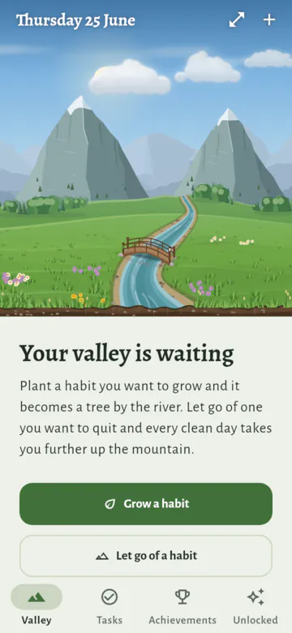
- Grove also asks "Where do you live?", so the sky and the seasons are yours. Tap Choose my city, or Skip (see Your location).
- Moving from another device? Restore your backup in Settings first (see Backup).
- There is no account and no sign-up. Grove works without the internet.
The four pages
- The app has four pages. You choose them from the bar at the bottom, or from the rail on the left when the window is sideways:
- Valley: your valley and your habits. This is the main page.
- Tasks: one-off things to do, such as "Call the bank" (see Tasks). Added in 1.3
- Achievements: every milestone you have reached, with its date, and Your week, a look back at each week (see Your week in review). Added in 1.1
- Unlocked: everything you have seen in your own valley so far, such as the deer, the fox or a rainbow, and hints for what you have not found yet.
The Valley page
- At the top is your valley, with today's date.
- Tap a plant or a mountain to open its habit's page.
- Tap the arrows, or press and hold the valley, to open zen mode.
- Tap + to add a habit.
- Pinch the valley with two fingers to look closer, up to four times. Coming in 1.5
- While you look closer, drag the valley to look around. A tap still opens a plant, a mountain or the cottage, and your habits scroll when you drag below the valley.
- Pinch back, or tap See the whole valley (the magnifier at the top), to see all of it again. Going to another page in the bar does too.
- On a computer, hold Ctrl and turn the mouse wheel. Once you have moved onto the page with Tab, the + and − keys work too.
- With a screen reader, the valley names each plant and mountain trail and says how it is doing, such as "Read. Oak, sapling. Completed today." Double tap one to open its habit. Added in 1.1
- Under the valley, a line says how today is going, such as "2 of 3 done today", and how the river is running.
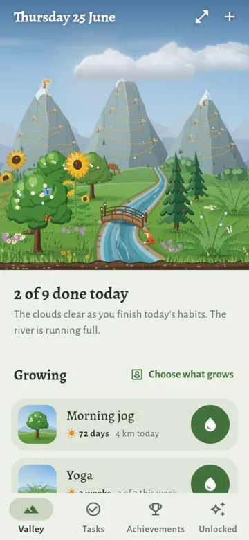
- For the first 3 days of each week, a small card under it offers a look back at the last week (see The card on the Valley page). Added in 1.1
- Your habits are listed under Growing and Letting go.
- Tap a habit to open its page. Its name moves from the row to the heading on its page, growing as it goes, and back again when you go back. With your device's animations turned off, the page just opens. Added in 1.3
- At the top of a habit's page, its plant or mountain stands in the valley as it is now: the sky at this hour, with the sun or the moon and stars, today's clouds, rain and any rainbow, the far mountains, and the meadow, as on its share card. Coming in 1.4
- On a habit you build, press and hold the drop to complete it. With Complete with a tap on, one tap is enough (see Marking a habit done).
- A paused habit says "Paused until …", with Resume in place of the drop (see Pausing a habit).
- On a habit you let go of, the row shows how long you have been clean. Resisted logs an urge you resisted.
- Under the habits, Tasks lists the tasks for today, up to 5. See all opens the Tasks page. On a day with no tasks, this part isn't there (see Tasks). Added in 1.3
- At the end of the page: Grow a habit, Let one go, Reorder habits and Settings.
Two kinds of habits
- Habits you build (for example jogging or yoga) are plants by the river.
- Habits you quit (for example late-night scrolling) are mountain trails.
- The valley has room for 10 plants and 3 mountains.
- If you have more habits, choose which ones grow with Choose what grows, next to the list's title on the Valley page, or in Settings → Your valley. A habit's own Show in the valley switch does the same.
- At first, the habits at the top of each list get the places.
- A habit that is not in the valley stays in your list. It still counts for the weather, the river and the animals.
Habits you build (plants)
Setting up
Tap Grow a habit.
Pick an everyday habit to start from, and Grove fills in the name, the plant, the days and any goal: Added in 1.1
Habit Days Goal Drink water Every day 8 glasses Read Every day 20 pages Walk 5 times a week None Meditate Every day 10 minutes Stretch Mon, Wed and Fri None Journal Every day None - You can change any of it before you plant.
- Or pick Something else and give the habit your own name.
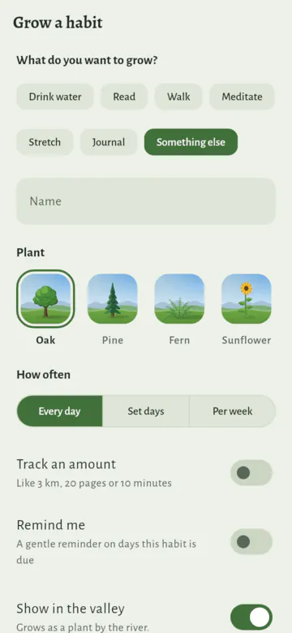
- Choose a plant: oak, pine, fern or sunflower.
- Young plants look alike, so the habit's page shows which plant it is, fully grown. Tap Change there to pick another plant. The growth and history stay.
- Choose when the habit is due:
- Every day,
- Set days of the week, or
- Per week: a number of times each week, from once to 6 times (for example 3 times a week), on any days. Weeks start on Monday, or on the day you choose (see Your week). Added in 1.1
- Turn on Track an amount to set a goal, such as "3 km" or "20 minutes". A day counts as done only when you reach the goal.
- Turn on Remind me for a reminder (see Reminders).
- Tap Plant it.
Marking a habit done
- To mark a habit done for today, press and hold the round drop next to it, on the Valley page or on the habit's page. The drop fills, and the habit is completed.
- On the habit's page, a line beside the drop says what to do, such as "Press and hold to complete", or "Hold to complete, or tap to log an amount" for a habit with a goal. Once it is done, it says "Completed today".
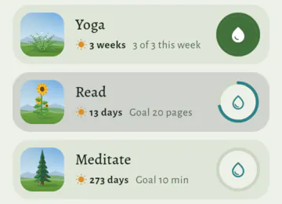
- A quick tap on the drop:
- for a habit with a goal, opens a sheet to log an amount, such as "2 km". Use − and +, then Save. Holding the drop fills the whole goal at once;
- for other habits, it reminds you to press and hold, such as "Press and hold to complete Morning jog."
- Complete with a tap (Settings → Look and feel): one tap on the drop completes a habit, so you don't need to press and hold. Added in 1.1
- The line beside the drop then says "Tap to complete".
- A habit with a goal still opens the sheet to log an amount. It starts at your goal, so Save fills it.
- Pressing and holding still works too.
- With a screen reader, double tap the drop to complete the habit. This is the same with the setting on or off.
- After you complete a habit, the message at the bottom says so, such as "Morning jog completed.", and has Undo.
- Forgot to log a day? You can fill in or change today and the 7 days before it (see Filling in a missed day).
- Doing a habit on a day when it is not due still helps the plant grow, but it does not add to the streak.
- For "Per week" habits, sessions after the week's number is reached add no more growth.
Filling in a missed day Added in 1.1
- On the habit's page, tap a day on the calendar under History. You can change today and the 7 days before it. These days sit on a soft green patch.
- A small sheet opens for that day:
- for a habit without a goal: Done or Not done;
- for a habit with a goal: the amount, with − and +, then Save. Clear this day takes the amount away.
- For a "Per week" habit, the sheet also says how that day's week stands, such as "This week: 2 of 3 done".
- A paused day says so: "Paused, so it counts as neither done nor missed", with its reason if it has one: "Paused (Holiday), so it counts as neither done nor missed". You can still fill it in, and it counts (see Pausing a habit). Added in 1.1
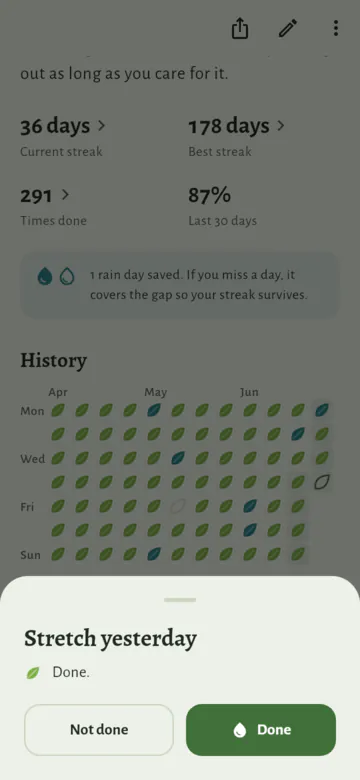
- The message after has Undo.
- Other days say why they can't change: days more than 7 days ago, days before the habit started, and days still to come.
- A paused day too far back says that it was paused: "Mon 14 Sep was paused, so it counted as neither done nor missed. Days this far back can't be changed." Added in 1.1
- The streak, the growth, rain days, wilting, the river and the widgets all follow the change straight away.
- A rain day you fill in is no longer needed, so the rain day stays saved. If you clear a day that was done, a saved rain day covers it, if you have one.
- A past day changes quietly: there is no sound, and no message for an achievement or a find it brings. These still go on the Achievements and Unlocked pages, with the day they were reached.
- But if the change makes something new show in the valley now, such as trout leaping once the river runs full, Grove tells you, as for any new find. It has really just appeared. Added in 1.1
- Today opens the same sheet. Saving it is the same as using the drop, sound and all.
All history Added in 1.1
- Tap All history, under the calendar on the habit's page. It shows every month since the habit started, newest first.
- Each month is a calendar of leaves: done, part done (some of the goal), rain day, missed, and a dot for a rest day. Under the month's name is its total, such as "18 days done, 42 km in all".
- A paused day left alone has a small moon, and the legend says "Paused" for a habit that was ever paused. A month with paused days counts them too: "18 days done, 3 days paused" (see Pausing a habit). Added in 1.1
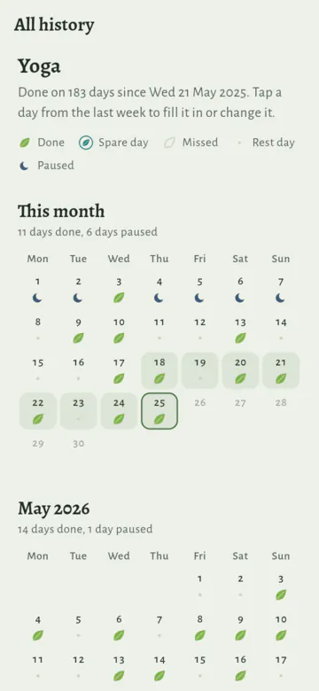
- The first column is the first day of your week: Monday at first (see Your week).
- Today has a ring. Tap one of the last 7 days to fill it in or change it. Other days say why they can't change.
- In a wide window, the months sit side by side.
How a plant grows
Every session adds some growth. A plant grows through five stages:
Stage Growth needed Seed 0 days Sprout 1 day Sapling 7 days Grown 30 days Thriving 100 days
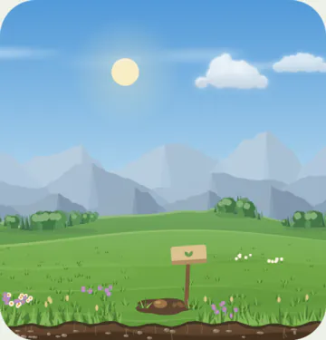
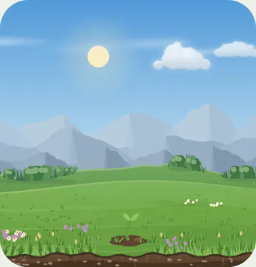
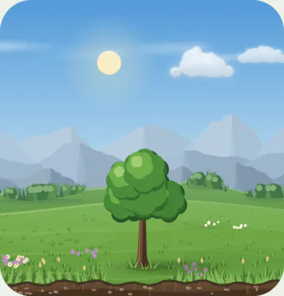
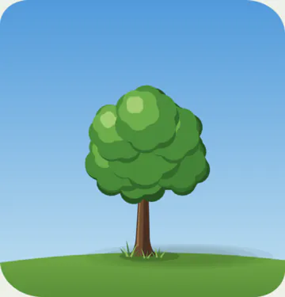
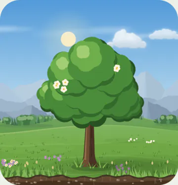
- A daily habit gets 1 growth day for each session.
- A habit that is due less often gets more for each session. For example, a habit 3 times a week gets 7 ÷ 3 ≈ 2.3 growth days for each session. So every habit grows at the same speed per week if you keep it.
- A missed due day takes away 10% of the plant's growth.
- For "Per week" habits, this happens at the end of a week that fell short: 10% for each missing session.
- A big tree loses some size, but it does not go back to a seed after one bad week.
- Plants never die.
Streaks
- The streak counts the due days you did in a row.
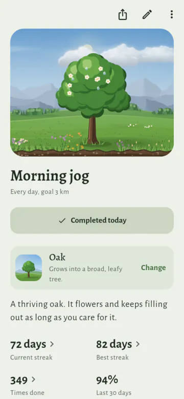
- A missed day starts the streak again from zero.
- A day with some progress but under the goal counts as missed.
- For "Per week" habits, the streak counts weeks in a row where you reached the number of sessions. A week is Monday to Sunday at first, or starts on the day you choose (see Your week). Added in 1.1
- The first week asks for less when you start mid-week (see A kinder first week). Added in 1.1
- Your best streak is always kept.
Your week Added in 1.1
- Weeks start on Monday at first. To start them on Sunday or Saturday, open Settings → Valley and calendar → Week starts on.
- The day you choose decides:
- which days count together for a "Per week" habit: its sessions this week, its streak of weeks, and "2 of 3 this week" in the app and on the widgets;
- the order of the days on the calendars: the habit's page has your first day at the top, and All history has it in the first column;
- the order of the day buttons for Set days. The days themselves don't change: a habit due on Mon, Wed and Fri still is.
- Changing it groups all your past weeks again, from the new day. A "Per week" habit's streak may change.
- Achievements you have earned stay.
- Anything the new weeks reach goes on the Achievements and Unlocked pages quietly, without a message or a sound.
A kinder first week Added in 1.1
Start a "Per week" habit in the middle of a week, and Grove gives you the benefit of the doubt: it counts the days of that week before you started as done, one session a day.
So your first week asks only for what is left: the number of times a week, less those days. It never asks for more than the days you have left that week, and paused days don't count as days left.
For example, with weeks from Monday, a habit started on a Friday has Monday to Thursday counted as done:
Habit First week asks for 3 times a week Nothing more: it counts at once 5 times a week 1 session, Friday to Sunday 6 times a week 2 sessions, Friday to Sunday A habit started on the first day of your week asks for the full number, like every week after.
A first week that asks for nothing more is kept straight away: the streak shows "1 week", and the habit says "First week kept". It isn't due, so no reminder or evening nudge comes for it that week.
The days counted as done add no growth, don't count as times done, and aren't marked on the calendar. Only the sessions you log grow the plant.
The first week is the one that holds the habit's first day: the day you added it, or an earlier day with a session logged, if there is one.
Habits due every day or on set days count days, not weeks, so this doesn't change them.
Rain days (saved days)
- For every 7 due days done in a row, you save one rain day.
- You can hold up to 2 rain days.
- If you miss a day and you have a rain day, the rain day covers it: the streak goes on and the plant does not shrink. The missed day itself adds no growth and does not add to the streak.
- Rain days are for habits due every day or on set days. "Per week" habits don't have them.
- The calendar on the habit's page marks these days as "Rain day".
- Did the habit that day after all? Fill it in (see Filling in a missed day). The day counts as done, and the rain day stays saved.
Wilting
- A plant droops for each due day missed in the last 7 days. Three missed days make it fully wilted.
- For "Per week" habits, it droops for the sessions missing last week.
- After 6 pm (18:00), a plant whose habit is due today and not done yet droops a little more, as a gentle reminder. Completing the habit takes this away.
- The droop from missed days goes as those days pass out of the last 7 days. A few days done in a row perk the plant up.
Pausing a habit Added in 1.1
- Going on holiday, or having a busy time? Pause the habit, so the days you can't do it don't count against you.
- On the habit's page, open the ⋮ menu and choose Pause. Then choose:
- Until I resume: it stays paused until you tap Resume.
- Until a date: the date is your last day off. Choose the date picks it; a week is offered first. The habit counts again the day after.
- A reason, if you like: tap Holiday, A busy time or A break, or write a few words of your own. Tap a choice again to take it away. A reason is optional, and only you see it. Added in 1.1
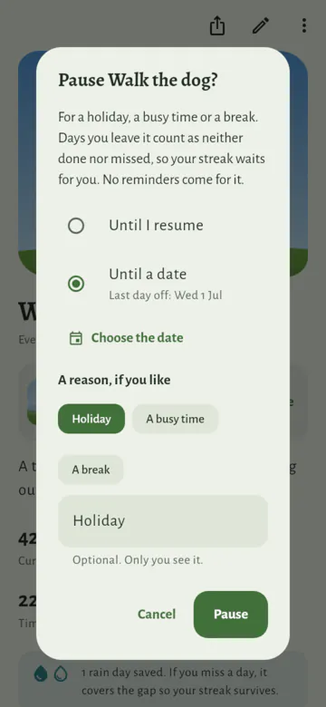
- The pause starts today. While it lasts:
- Days you leave it count as neither done nor missed. Your streak waits for you: it is kept, but it doesn't grow.
- The plant doesn't shrink or wilt, and rain days are not used up.
- A day you do it anyway still counts.
- For "Per week" habits, a week asks only for the sessions its days left room for. A week paused all through asks for none.
- No reminders and no evening nudge come for it.
- In the valley, the plant rests: straw is tucked round its foot, with a little sign with a moon on it. Its pictures on its row and its page rest the same way, and a screen reader says it is resting.
- Its page and its row say "Paused until …", such as "Paused until Fri 9 Oct" or "Paused until you resume", with a Resume button.
- With a reason, it follows the date: "Paused until Tue 6 Oct · Holiday". Where the row has no room, the reason is cut short. Added in 1.1
- The home-screen widgets say so too, and don't offer to complete it (see Home-screen widgets). They leave out the reason.
- To give a reason later, change it or clear it, tap Add a reason or Change reason beside Resume on the habit's page. Leave it empty to clear it. Added in 1.1
- Resume makes it count again from today. You can also resume from the ⋮ menu.
- Paused days stay neutral after you resume.
- The habit's calendar and All history show when it was paused: Added in 1.1
- A day it was due but paused, and left alone, has a small moon, like the sign of the resting plant. A screen reader says "Paused", with the reason: "Paused (Holiday)".
- A day you did it anyway shows as done, or part done if you logged only some of the goal.
- A day it was not due stays a rest day, with its dot.
- Tap one to see it, as with any day (see Filling in a missed day).
- Your week names the reason too, such as "2 days paused · Holiday" (see Your week in review).
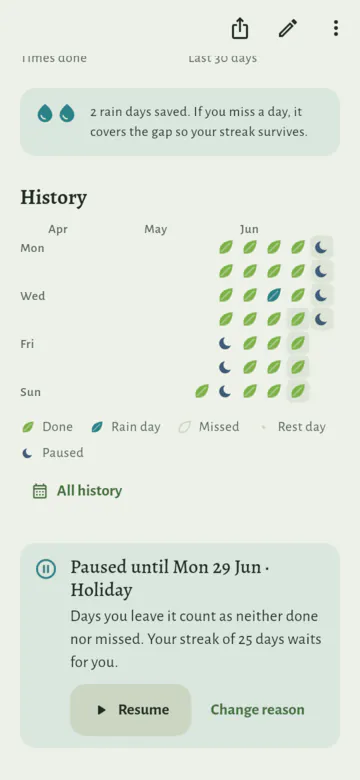
- Only habits you build can be paused. The clean time of a habit you let go of keeps running.
Habits you quit (mountain trails)
Setting up
- Tap Let go of a habit and choose what you are letting go of: Late-night scrolling, Sugary drinks, Impulse shopping, Nail biting, or Something else, which you name yourself.
- Grove has no health content built in. You can let go of any habit under a name of your own.
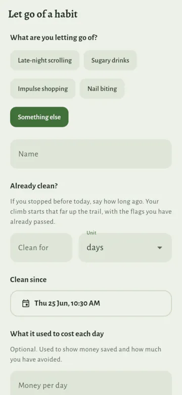
- Optional: what it used to cost each day:
- Money per day, to see the money you saved;
- Amount per day, with its unit, such as 2 hours or 3 cans, to see how much you avoided.
- Optional: Already clean? and your own milestones (both below).
- Tap Start the climb.
The trail
- Each quit habit is a mountain. Every clean day takes you higher.
- There is a flag at each milestone:
- 1 day
- 3 days
- 1 week
- 2 weeks
- 1 month (30 days)
- 3 months (90 days)
- 6 months (180 days)
- 1 year (365 days): the summit
- The flags are spaced evenly along the trail, so early flags come quickly.
- The trail is a path of stone steps that follows the rock: over the mountain's ridges, round its hollows, darker on the faces in shade. The steps you have climbed are gold. Added in 1.3

- Already clean? When you add a habit you stopped before installing Grove, say how long ago: a number of days, weeks, months (30 days) or years. The climb starts that far up the trail, with the flags you have already passed, and money saved counts from then. It sets Clean since, which you can also pick as an exact date and time.
Urges and slips
- I resisted an urge, on the habit's page, or Resisted on its row in the Valley page: log it when you feel the urge but don't give in. It counts as a small win, and a wildflower grows on the trail.
- The message at the bottom has Undo.
- You can also log it from a widget, or from Grove's icon (see Shortcuts on the app icon).
- Log a slip, on the habit's page: after you confirm, this sends you back to the start of the trail.
- When? is Now at first. Choose Earlier to log a slip from up to 7 days back: pick the day, and tap the time to change it. Your climb then starts again from that time. Added in 1.1
- What set it off? is an optional short note, such as "a long day". Only you see it. Added in 1.1
- The message at the bottom has Undo, in case you logged it by mistake. Added in 1.1
- Your best climb stays on the mountain as a teal flag, so you can see how far you got.
- Total clean days are kept. They are all the days since you started, minus the days when you slipped.
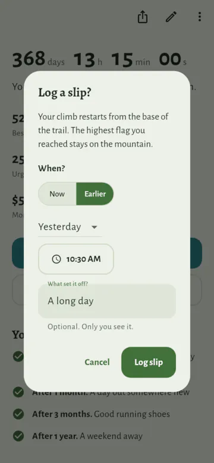
- Forgot to log an urge? Open Urges resisted on the habit's page and tap Log an urge at the top. It has the same When? and What set it off? as a slip. Added in 1.1
- To add a note later, tap the urge or the slip in its list (see The lists behind the numbers).
Money and milestones
- If you enter money per day, Grove shows the Money saved: clean days in total × money per day.
- Money is in the currency of the country your sky is in (see Your sky), such as rupees for a city in India, written the way that country writes numbers. Choose another in Settings → Valley and calendar → Money. With no city chosen, it follows your device. Coming in 1.4
- If you enter an amount per day, it shows how much you avoided.
- Milestones are your own things to look forward to, such as "After 2 weeks: a new book with the money saved".
- Add them when you set up the habit, or later with the pencil (Edit habit) or Add milestones on its page. Each has a time (days, weeks, months or years) and a few words.
- The habit's page lists them under Your milestones, soonest first, and ticks each one when your current climb has lasted that long. After a slip they start again with the climb.
- They are optional, up to 12 per habit, and they are kept in backups.

Changing, archiving or deleting a habit
- On a habit's page, the pencil (Edit habit) changes its name, plant, days, goal, reminder, costs or milestones. Save changes keeps them.
- A new goal or new days count from the day you change them. Earlier days keep the goal and the days they had, so raising a goal never takes away a day you already did. Added in 1.3
- For a habit due a number of times a week, a new number counts from the week you change it in. Added in 1.3
- Moving between set days and a number of times a week counts the whole history again in the new way, since the streak then counts weeks instead of days, or days instead of weeks. Earlier days still keep their goal, such as 5 pages. Added in 1.3
- Edit history, in the ⋮ menu on a habit's page, lists every change to it, newest first, such as "Goal changed from 5 pages to 10 pages", with the day and time. It starts with when the habit was added and how it was set up. A change to the order of your habits isn't listed. Added in 1.3
- The ⋮ menu on the page has Archive habit, for a habit you want to put away but not lose. Added in 1.1
- It leaves your valley, your lists, the widgets and the reminders, and it no longer counts for the day, the weather or the river.
- All of its history is kept, and its achievements stay, marked "Archived".
- A Plant widget that showed it says the habit is archived.
- An old widget row or notification for it opens Archived habits, where it can be restored. Added in 1.3
- The message after it has See archived.
- Archived habits are in Settings → Valley and calendar → Archive. Each one has:
- Restore: it comes back at the end of your list, with all its history. It gets its place in the valley back if there is room. Its achievements are as before, and a Plant widget that showed it shows it again.
- Delete for good: this removes it and all of its history.
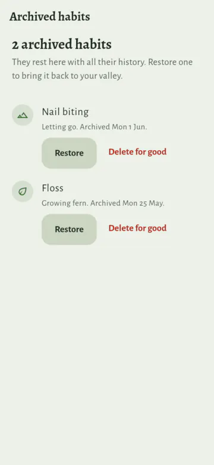
- The ⋮ menu also has Delete habit. This removes the habit and all of its history from your valley. Its achievements stay.
Putting habits in order Added in 1.1
- A new habit goes at the end of its list.
- To change the order, tap Reorder habits at the end of the Valley page. Then:
- drag a habit by its handle, the lines at the right of its row, or press and hold it and drag it; or
- use its arrows to move it up or down. The arrows also work with a keyboard and a screen reader.
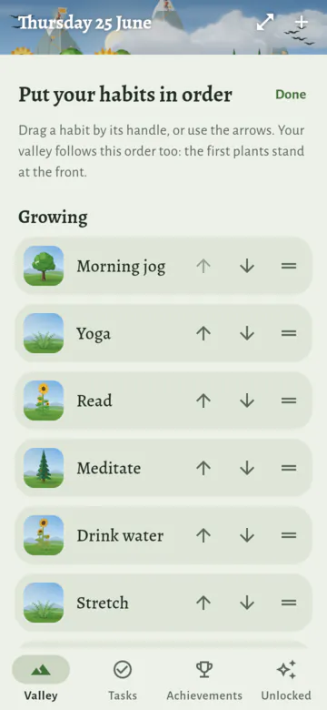
- Growing and Letting go each have their own order. While you reorder, they are one above the other, even in a wide window.
- Each move is saved at once. Tap Done, or go back, when you have finished.
- The valley follows the order. The first plants stand at the front, nearest you. The first trail climbs the mountain on the left.
- The home-screen widgets show your habits in this order too.
Tasks Added in 1.3
- Tasks are one-off things to do, such as "Call the bank" or "Return the library book". They sit beside your habits, on their own page: Tasks, in the bar or the rail.
- Tasks are off at first. Turn them on in Settings → Tasks.
- Turned off, they leave the bar, the Valley page and the sky, their reminders stop, and the Tasks widget and the Add a task shortcut go. Your tasks are kept, and come back as they were when you turn tasks on again.
- What they earned stays: a cottage already grown, and achievements.
- Add a task: type it in the field at the top of the Tasks page and press Enter.
- Tap a day under the field first to give it one: Today, Tomorrow, This weekend, Next week, or Pick a date. Tap the day again for no date.
- The day stays chosen, so you can add a few for the same day in a row.
- The Tasks page groups tasks by day: Today, Tomorrow, This week, Later and No date.
- In each day, starred tasks come first, then tasks with a time, in order of time, then the rest, in the order you put them.
- A task's day passes and it isn't done: it moves into Today, quietly, with a small note such as "from Fri". Nothing is ever marked late. There it goes with today's tasks. Coming in 1.4
- Put tasks in order: drag a task by the dots at the end of its row. Coming in 1.4
- A task moves among the other tasks for the same day: starred ones among starred ones, the rest among the rest. Tasks with a time keep the order of their times. A task with nothing to move among has no dots.
- With a keyboard, Alt and the up or down arrow move a task. A screen reader offers Move up and Move down.

Finish a task: tap the round box beside it. The message after has Undo.
Star a task: tap the star at the end of its row. Tap it again to take the star away.
Change a task: tap it. Its sheet has:
- its name and a note;
- Steps: a short checklist inside the task, such as "Passport" and "Charger" in "Pack". Type a step and press Enter to add it, tick it when it is done, or remove it with its ×. The task's row shows how many are done, such as "1 of 3 steps". Drag a step by its dots to move it; Coming in 1.4
- when it is due: no date, one of the quick days, or Pick a date;
- a time on that day, such as "Due at 10:00 AM", or any time that day; Change time picks another;
- Reminder (Android): Remind me turns on a reminder at the task's time on its day, or at 9:00. A time already past today becomes the next hour. Change reminder picks another day and time (see Reminders); Added in 1.3
- it shows once the task has a date; taking the date away takes the reminder too; Coming in 1.4
- it says how far before the task it comes, such as "30 minutes before the task", then its day and time. When the task's day or time changes, the reminder moves with it and stays as far before; Added in 1.3
- for a task with a time, On time, 10 minutes before and 30 minutes before set the reminder in one tap; Coming in 1.4
- its List: no list, one of your lists, or New list;
- Star.
Lists, such as Home and Work, keep tasks apart. A task is in one list or in none.
- New list, under the title of the Tasks page, makes one.
- Tap a list to show only its tasks, and All to show every task again. A task you add while a list is showing goes into it.
- With every task showing, a task's row names its list.
- To rename or delete a list, press and hold it, or tap the ⋯ beside the list on show. Deleting a list keeps its tasks, in no list.
Delete a task: press and hold it, or tap Delete in its sheet. The message after has Undo.
The month: the calendar button at the top of the Tasks page shows a month instead of the list, and the list button goes back. Added in 1.3
- Each task has a mark on the day it is due: filled while still to do, hollow once done. Tasks with no date aren't on it.
- Tap a day to see its tasks under the month. Add a task on this day, or Add a task for today, adds one due then.
- The arrows show the month before and after.
- On a wide window, such as a tablet on its side or a computer, the list and the month sit side by side.
Done, at the end of the Tasks page, lists every task you have finished, newest first, by month.
- Tap a task's tick there to put it back on your list.
- Clear deletes them all for good, after asking. The count of tasks you have finished stays.
On the Valley page, the tasks for today show under your habits: due today, or moved on from a day that has passed. Up to 5 show; See all opens the Tasks page.
On Android, the Tasks widget shows today's tasks on your home screen, and finishes one with a tap. See Home-screen widgets.
Today's tasks count for the sky, as habits do: the clouds clear as you finish them, the rain eases, and the valley glows golden once every habit and every task due today is done.
- Tasks due today count, and so do tasks moved on from a day that has passed, until you finish, move or delete them. Tasks with no date don't count.
- Tasks never change the river or the animals, and they never make or break a perfect day.
- The line under the valley still counts your habits, such as "2 of 3 done today", and its words say when tasks are left.
The cottage: with your first finished task, a small cottage appears on the far edge of the meadow, between the hills and the river. It grows as you finish more:
Tasks finished The cottage gains 1 the cottage itself 10 a flower box under the window 25 a bench by the door 50 a straw beehive 100 a vegetable patch, and smoke from the chimney - It counts every task you have ever finished. Deleting a task or clearing the Done list never takes anything away; Undo on a task you just finished takes back that one.
- Its windows glow at night, and in snowy winter it has snow on its roof.
- Tap the cottage to open the Tasks page.
- Each thing it gains is something to find on the Unlocked page, and the first task, then 10, 50 and 100, are achievements (see Achievements and unlocks).

- Finishing a task makes a soft paper sound, when sounds are on. Finishing the last thing due today plays the bloom, as the day's last habit does.
- Your week says how many tasks you finished, such as "You finished 6 tasks." It never counts the ones left.
- Tasks are in backups, with your habits.
- On Linux, tasks work the same.
What the valley shows
- The valley shows how your habits are going, today and this week.
- Clouds show today:
- With nothing done, the sky is at its cloudiest.
- Finishing habits clears some of the clouds, and so does finishing today's tasks. Added in 1.3
- When everything is done, the valley glows golden and the sun shines brighter.
- The river shows the 7 days before today:
- The more of your due days you kept, the fuller and faster the river.
- Even in a bad week, the river never dries up.
- Only habits you build count. Days saved by a rain day count as kept.
- Animals come with time. They follow your most grown plant (its growth days, see How a plant grows) or your current clean climb, whichever is longer:
- Butterflies at 7 days (only by day, not in steady rain, not in snowy winter). Three kinds visit: an orange one with dark wing tips, a white one and a blue one. They flutter and glide around the plants, and now and then one lands on top of a plant to rest.
- Songbirds at 21 days, or on any day when everything is done. They fly by day.
- A deer at 30 days.
- A fox at 100 days.
- A plant loses growth when you miss days, and a slip starts a climb again, so an animal can leave. Its card on the Unlocked page stays.
- Fireflies come out every night, except in snowy winter or in steady rain.
- Small birds visit a grown oak, once it is about 80% grown: robins, blue tits, red-whiskered bulbuls and sparrows. Added in 1.3
- Now and then one comes, or two, three or four together, about once a minute. They come a little more in the morning and late afternoon, less in the rain, and not at night.
- Most sit on the oak's crown a while, look about and fly off. Some drop into its leaves out of sight, and some burst out of them and away.
- The cottage on the far edge of the meadow grows with the tasks you have finished (see Tasks). Added in 1.3
- Trout jump out of the river when it runs well:
- They start when you kept about half of your due days in the last week.
- They jump most when you kept about 80% or more.
- They don't jump in snowy winter, and they jump less at night.
- Habits that are not in the valley count for all of this too.
- The time of day, the season, rain, snow, rainbows, the sun and the moon are explained in Weather and seasons.
The lists behind the numbers
- On a habit's page, a number with a small › opens the list behind it.
- Habits you build:
- Current streak or Best streak: every streak, with its dates, what ended it, and the rain days that kept it going. The best and the current one are marked.
- Times done: how many times you did it, such as "Done 12 times", then every day done, with the amount you logged, such as "3 km", or Done for a habit with no goal, and the time you logged it (times start when Grove began keeping them; older days show only their date). Days done when the habit was not due are marked Extra.
- Habits you quit:
- Urges resisted: every urge with its date and time, and how far into its climb it came. Log an urge at the top adds one you forgot.
- Slips: every slip with its date and time, and how long the climb it ended was. Motivate me is at the top.
- Each urge and slip shows its note, if it has one. Tap one to add a note, change it or clear it.
- Best climb or Clean days in total: every climb, with its dates, its length and the flag it reached. The best and the current one are marked.
- When they come (urges) and When slips happen: with 3 or more, a chart shows the hours of the day they happen. With 5 or more, it names your busiest two hours, such as "Most urges come between 21:00 and 23:00". Knowing your risky hours helps you plan for them.

- Fix a mistake: press and hold an urge or a slip, then tap Delete. The message after has Undo. Deleting a slip joins its two climbs again.
- Times follow your phone: 12-hour ("9:14 PM") or 24-hour ("21:14"), as set in the phone's date and time settings. Grove has no setting of its own for this.
Motivate me
- A lost streak is not lost progress. The Motivate me page shows what you kept, with your own numbers.
- For a plant:
- the plant, still standing;
- how much of its growth it kept (one missed day keeps 90%);
- every day since you started, as leaves, so a miss is one small gap;
- what stays for good: best streak, times done, the last 30 days, achievements;
- a short note from research: missing one day does not undo a habit (Lally and others, 2010);
- how to start again, such as "Do it today to start a new streak.", with the drop to complete it.

- For a mountain:
- all your clean days put together as one climb, on the mountain;
- every climb laid end to end, so a slip is a small notch, not a fall;
- what stays for good: best climb, urges resisted, flags reached, and money saved (or your achievements, if you set no money per day);
- the next flag, and, after a slip, how to earn Higher than ever.
- When Grove offers it (never as a popup):
- After a slip, the habit's page shows a small card with Motivate me. It goes away after 3 days, or when you close it. Added in 1.1
- After a plant's streak of 3 days or more (2 weeks or more for "Per week" habits) ends, the habit's page shows a small card. It goes away when you complete it again, after 3 days, or when you close it.
- Any time: the habit's ⋮ menu → Motivate me.
- Turn the offers off in Settings → Reminders and encouragement. The menu entry stays.
Your week in review Added in 1.1
- Your week is a calm look back at one week. Open it from the top of the Achievements page, or from the card on the Valley page at the start of a week (below).
- It opens on last week: the last week that has ended. Weeks start on the day you choose (see Your week).
- The arrows step back to earlier weeks, as far as your first habit, and forward again to last week. On a computer, the left and right arrow keys do the same.
- The week still going is not shown, as its days are not over yet. Until your first week has ended, the page says when it will be ready.
- At the top, the week at a glance: times done, perfect days, urges resisted and money saved. Then:
- your best day, when one day had more habits done than any other;
- good news from the week before, such as "4 more habits done than the week before." Grove never points out a week that went less well.
- the tasks you finished, such as "You finished 6 tasks.", never the ones left. Added in 1.3

- Growing: each habit you build, with what the week asked of it:
- "6 of 7 days" for a habit due every day or on set days. A day it was not due but you did it anyway is an extra day;
- "2 of 3 sessions" for a "Per week" habit. Its first week asks for less (see A kinder first week), and says "First week kept" when it asked for nothing more;
- how its streak went: "Streak grew to 12 days", "Streak kept at 12 days" while it was paused, or "A new streak of 3 days". A streak that ended is not mentioned;
- rain days that kept the streak going, and paused days. Paused days count as neither done nor missed. A habit paused all week says "Paused all week";
- the reason for a pause, if it had one: after the days paused, such as "2 days paused · Holiday", or first under "Paused all week", such as "Holiday · Streak kept at 7 weeks · 1 session". Added in 1.1
- a new stage its plant reached that week, such as "Grew into a sapling";
- habits with nothing done that week share one quiet line, such as "A quiet week for Read and Stretch".
- Letting go: each habit you let go of, with its clean days that week, urges resisted, the trail flags it reached, and money saved if you set money per day. Clean days and money count the same way as Clean days in total on the habit's page, for that week only.
- A slip comes last, in a few words: "1 slip. Every climb counts."
- Achievements: the ones reached that week. Found in the valley: what you saw for the first time that week.
- Tap a habit to open its page, an achievement to open its habit, or a find to see it bigger.
- A week with nothing logged gets a few kind words instead of a page of numbers: "A quiet week". When every habit was paused all week, it is "A week of rest".
- Archived habits are left out.
The card on the Valley page Added in 1.1
- For the first 3 days of each week, the Valley page shows a small card under how today is going: "A new week has begun. Take a calm look back at the last one.", with See your week.
- It comes only when last week had something in it: a habit done, an urge resisted or a clean day.
- It is never a popup and never a notification. It goes when you close it with ✕, when you open the review, or after the third day.
- To stop it, turn off Weekly review card in Settings → Reminders and encouragement. Your week stays on the Achievements page.
Achievements and unlocks
- The Achievements page records every milestone you reach, with the date.
- It keeps achievements forever, even after you delete the habit.
- At its top, Your week looks back at one week at a time (see Your week in review). Added in 1.1
- The Unlocked page shows what you have seen in your own valley, such as animals, plant stages, weather and rainbows.
- The full list, and how to earn each one, is in Achievements and unlocks.
Notes Added in 1.3
- Notes share their place in the bar with Achievements. On the Achievements page, ⋯ → Switch to Notes puts Notes there instead; on the Notes page, ⋯ → Switch to Achievements brings them back. Grove remembers which you chose. Your achievements are still earned while Notes has the place.
- New note starts one. A note can have a title, some text and a list, any of them. It is saved as you type.
- In the list, add items, change them, delete them, or move them by their handle. The list of notes shows the start of a note's list, such as "Milk, Bread, Eggs".
- Links in a note, such as https://example.com or www.example.com, are underlined. Tap one to put the cursor in it, and Open under it opens it in your browser. Grove itself never goes online. Coming in 1.4
- Delete a note from its page, or by pressing and holding it in the list. Undo brings it back.
- The Notes page's ⋯ menu has Export notes, which saves all your notes in one file, and Import notes, which adds the notes from such a file. Importing never deletes or changes a note you have, and skips any you already have.
- Notes are in your backups too.
Zen mode
- Tap the zen button (the arrows at the top of the valley), or press and hold the valley, to see it full screen. On Android you can also press and hold Grove's icon and choose Zen mode.
- The land fills about the lower half of the screen, with a tall sky above. On a clear night it shows the Milky Way and now and then a shooting star; by day a hawk circles.
- Tap the screen to show the time, the date, how today is going and the buttons. They fade again after a few seconds.
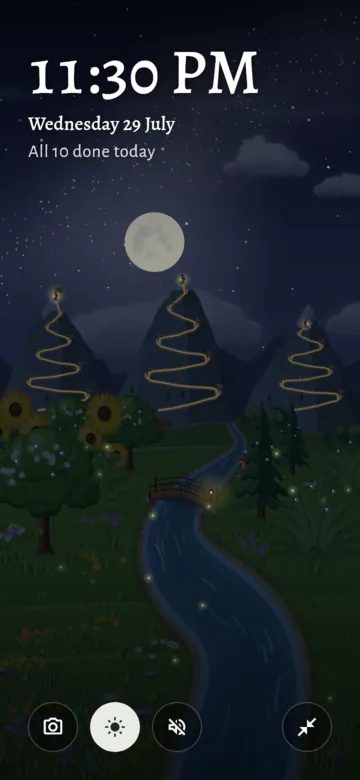
- The buttons:
- Screenshot: save the valley to your photos, or share it. The picture is the valley alone, without the buttons, as closely as you are looking at it. Coming in 1.5
- Keep screen on: the screen does not turn off. It is on at first.
- Sounds (the speaker, lit while valley sounds play): opens the sound settings: Added in 1.1
- Valley sounds, on or off: a stream, birds by day, crickets at night, rain when it rains, and soft chords, slow and warm music that loops every 20 seconds;
- a level for each of these sounds. Turn Soft chords down to nothing for nature alone;
- Taps and chimes: the level of the app's other sounds.
- See the whole valley, only while you look closer (see below). Coming in 1.5
- Leave zen mode. A firm swipe down also leaves, unless you are looking closer: then it looks around.
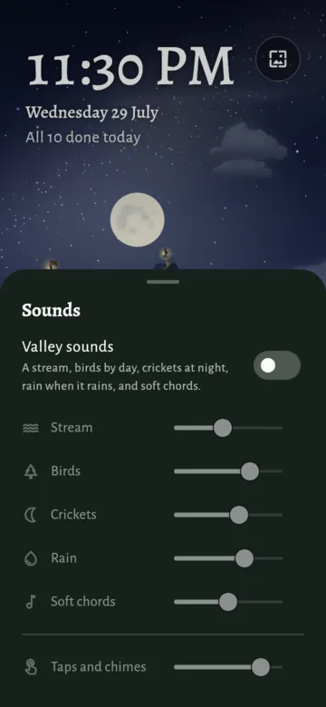
- Valley sounds follow the valley: birds fade at dusk, crickets come in at night, and rain covers the rest while it rains. They pause when you leave the app.
- Look closer: pinch with two fingers, up to four times closer, and drag to look around. Tilting still works while you do. Pinch back, or tap the screen and then See the whole valley, to see all of it again; leaving zen mode does too. On a computer, hold Ctrl and turn the mouse wheel, or press + and −. Coming in 1.5
- Tilt: on a phone or tablet, tilting it moves the valley a little, for a gentle sense of depth.
- Near things move more than far ones: the meadow at the bottom of the screen most, the hills less, the mountains a little and the sky hardly at all. Rain and snow fall in front of it all. Added in 1.1
- Plants, animals and the bridge move with the ground they stand on, so nearer plants slide past farther ones. The river stays in one piece. Added in 1.1
- It follows the smallest turn of your hand straight away. Hold the device still and the valley settles back to the middle in a few seconds. Added in 1.1
- The bigger the screen, the further the valley moves, so it shows on a tablet too. Added in 1.1
- On a computer, the mouse does it: move it toward an edge of the window to look into the valley from that side. The middle of the window is still, and the valley glides back when the mouse leaves the window. Added in 1.1
- To keep the valley still, turn off Tilt the valley in Settings → Look and feel → Zen mode. Grove then doesn't use the motion sensors at all. Added in 1.1
- Zen mode also cares for the screen by itself:
- Burn-in care: the picture moves a few pixels every 3 minutes, so nothing stays in one place for hours.
- If animations are turned off in your device's settings, the valley stays still and there is no tilt.
- It draws 30 frames per second by default, to save battery. Choose 30, 60 or Max in Settings → Look and feel → Zen mode. Max uses the fastest your screen can show, such as 90 or 120.
- Grove also asks the phone for a screen speed that suits the choice, such as 60 Hz for 30 or 60 frames, which saves battery. Leaving zen gives the choice back to the phone.
Home-screen widgets (Android)
- Add them from Settings → Home-screen widgets, or from the launcher's widget list.
- Widgets always show your own habits and tasks.

- There are six widgets:
- Clean streak (2×2): days clean and a live timer for one quit habit, with the next flag.
- The sprout button logs an urge you resisted. The widget says "Urge resisted" for a few seconds.
- Tap the rest of the widget to open the habit.
- When you keep quit habits private, it says "Private habit" instead of the habit's name (see Privacy).
- It follows your first quit habit. On Android 12 or newer, press and hold the widget to choose another.
- Plant (2×2, and any size from 1×1 up): one habit you are building.
- The plant sits in a ring that fills as today goes: with the amount for a goal such as 8 glasses, or with the week's sessions for a habit due a number of times a week. The ring turns green when done.
- For a habit due a number of times a week, a new week starts on the first day of your week (see Your week). In its first week, the ring fills toward what that week asks for, and the widget says "First week kept" once that is done. Added in 1.1
- The button completes the habit, or adds a step to today's amount, such as "+1 glass".
- For a habit with no amount, it says Complete. Once the habit is done, it says Done, and a tap opens the habit.
- For a habit with a goal, a second button, Done, fills the whole goal at once.
- On the widest sizes, a − button takes a step back off.
- Where there is no room for a button, such as at 1×1 or a narrow 2×1, the plant itself is the button: a small + or drop on its ring shows it. At 1×1, a word under it says how today stands, such as "To do" or "Done".
- From 2×2 it also shows the streak, and from 4×2 or 2×3 the last 7 days too.
- Its settings choose the habit, how much one tap adds (such as +1 glass, half the goal or the whole goal), and whether a tap at 1×1 opens the habit instead. You choose them when you add the widget. On Android 12 or newer, press and hold the widget to change them.
- Today ring (2×1, and any size from 1×1 up): how today is going at a glance.
- A ring of today's habits with the count inside, such as 3/5. It turns gold when everything due is done.
- It sits on the sky as it is right now where you live: dawn, day, dusk or night. Where there is room, the sun or the moon shows too.
- It names the next habit to do. From 2×2 it also says the day. Tap it to open Grove.
- Today (4×2): today's habits with their plants.
- Tap the drop to complete a habit; a full drop means it is completed today. For a habit with a goal, the drop fills the whole goal.
- Tap the rest of the row to open the habit's page in the app.
- Tasks (4×2, and any size from 2×2 up): today's tasks. Added in 1.3
- While tasks are off (see Tasks), it says so. Tap it to turn them on in Settings.
- It lists the tasks due today and those moved on from a day that has passed, starred first, as the Valley page does. Each row shows its list, its time or where it came from, such as "from Fri", and its steps.
- Tap the circle to finish a task. Tap the rest of the row to open the task in Grove, or + to add one.
- When every task for today is done, it says so, with how many are due tomorrow.
- Your valley (4×2, and smaller): a picture of your valley.
- From 7 am to 7 pm it shows the day. At night it shows the night sky with the real moon.
- Make it taller and it also shows today's habits and the habits you are letting go of, like the app's main page.
- Its rows work like the Today widget's: the drop completes a habit, and the rest opens it. On a habit you let go of, the sprout logs an urge.
- Clean streak (2×2): days clean and a live timer for one quit habit, with the next flag.
- A paused habit (see Pausing a habit) says "Paused until …" on the widgets, and its plant rests, with straw and a little moon sign. Added in 1.1
- It doesn't count in "3 of 5 done today", and the Today ring never names it as next. If you complete it anyway, it counts as done.
- It has no button to complete it. The Plant widget shows Paused instead, and the Today rows a moon in place of the drop. Tap either to open the habit's page, where Resume is.
- Undo: on the Plant, Today and tall Your valley widgets, for 10 seconds after a tap that changes today, the widget shows Undo, which puts the amount back. On the Tasks widget, Undo opens the task again.
- Quick taps are safe: a second tap on the same button within half a second counts once, and the last amount you tapped is the one saved. This goes for the sprouts too: a quick double tap logs one urge.
- Widgets update at once when you tap them, even when Grove is closed, and start a new day at midnight by themselves.
- A widget's own settings (its habit and its step) are not in backups.
Shortcuts on the app icon (Android) Added in 1.1
- Press and hold Grove's icon on your home screen or in your app list. It offers four shortcuts:
- Zen mode: opens the valley full screen.
- Add a habit: asks whether to grow a habit or let one go.
- I resisted an urge:
- with one habit you are letting go of, it logs the urge at once. The message at the bottom has Undo;
- with more than one, it asks "Which urge did you resist?". Tap the habit;
- with none yet, it offers to add one.
- Add a task: opens a new task on the Tasks page. Only while tasks are on (see Tasks). Added in 1.3
- You can drag a shortcut onto your home screen to keep it there.
- The shortcuts show once you have opened Grove once.
- Linux has no shortcuts.
Reminders (Android)
- Each habit you build can have its own reminder. Turn on Remind me when you add or edit the habit, or set the time in Settings → Reminders and encouragement.
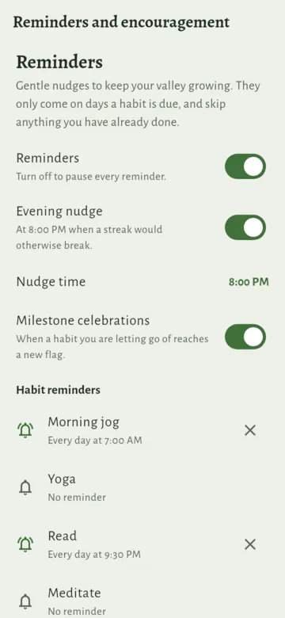
- Grove asks for permission to send notifications only when you turn a reminder on.
- A reminder comes only on days when the habit is due, and not if the habit is already done.
- A "Per week" habit is due while its week still asks for a session. A first week that asks for nothing more gets no reminders (see A kinder first week). Added in 1.1
- A paused habit gets no reminders and no evening nudge. They start again when it resumes. An archived habit gets none at all.
- Grove plans the reminders for the next 7 days.
- Tap a reminder to open the habit. Its buttons work without opening Grove:
- Mark done, for a habit without an amount goal;
- Remind me in an hour: the reminder goes away and comes back an hour later, unless you have done the habit by then. Use it again to put it off once more. Added in 1.1
- Evening nudge (8 pm at first; change it with Nudge time): it comes only when a streak of 2 or more days is at risk today.
- For a "Per week" habit, that is when every day left in your week is needed for its sessions.
- Milestone celebrations: a notification when a habit you quit reaches a new flag on its trail.
- Task reminders: a task can have one reminder, at a day and time you choose (see Tasks). Added in 1.3
- It comes however far off it is, even if you don't open Grove before then, and not if the task is done by then.
- Tap it to open the task. Its buttons work without opening Grove: Done finishes the task; Remind me in an hour puts it off; and Tomorrow moves the task to tomorrow, its reminder too, at the same times.
- The Task reminders switch in Settings → Tasks turns them all off. With tasks off, none come.
- Reminders may come a few minutes late. Grove does not ask for the "exact alarms" permission.
- The Reminders switch in Settings pauses all reminders, and any you put off. Send a test reminder shows one straight away.
Privacy (Android) Added in 1.1
- Settings → Backup and privacy → Keep quit habits private.
- When it is on, the names of habits you are letting go of stay inside Grove:
- widgets say "Private habit" instead of the name;
- milestone notifications say "One week on your trail" instead of "One week without late-night scrolling";
- on Android 13 or newer, once you leave Grove, the app switcher shows a plain card for it instead of a picture of its screen.
- Inside Grove, and on a widget's own settings screen, you still see the names.
- Habits you build keep their names in widgets and reminders.
- It is off at first: names make widgets easier to read, and most quit habits are everyday ones. Turn it on if yours are your own business.
- The setting is kept in backups.
- Pictures you share yourself, such as a share card, still show the name.
Sounds
- Soft sounds play for a habit done, a plant growing a stage, finishing the day, resisting an urge, planting, slips, finishing a task Added in 1.3, and new achievements and unlocks.
- They are off at first, so opening Grove for the first time is quiet. Turn on App sounds in Settings → Sounds.
- On Android this section is called Sounds and vibration, as it also has the switch for vibration. Added in 1.1
- Settings → Sounds also has:
- Taps and chimes: how loud these sounds are;
- Valley sounds in zen mode, with a level for each sound (see Zen mode).
- Valley sounds need App sounds on. Turning valley sounds on turns App sounds on too.
- Taps and chimes follow the phone's silent mode. Valley sounds play at media volume, like music.
Vibration (Android) Added in 1.1
- Grove gives a soft tap when you do something, so you can feel that it worked:
- a firm tap when you complete a habit, and a light tick as you start to press the drop;
- a tap when you resist or log an urge, save a habit, fill in a day, or pause, resume, archive or restore a habit;
- a gentle tap for Undo, a slip, a cleared day and deleting;
- a light tick for small steps: an amount up or down, choosing a plant or a ready-made habit, moving a habit in Reorder habits, and Keep screen on in zen mode.
- It only taps when you do something. Scrolling, changing pages and messages from Grove never vibrate.
- Vibration is on at first. Turn it off in Settings → Sounds and vibration. Turned on again, it taps once, so you can feel it.
- Your device's own setting for touch vibration still applies. When that is off, Grove stays still too.
- With Vibration off, a long press to see a button's name stays still too, and so does pressing and holding an urge, a slip or a task to delete it.
- The setting is kept in backups.
- A computer can't vibrate, so there the section is just Sounds.
Your location
- Grove needs to know roughly where you live, to place the sun and the moon and to choose your climate.
- Until you answer, Grove asks "Where do you live?" under the valley. You can:
- tap Choose my city and search a list built into the app, or
- tap Skip, and Grove guesses from your time zone.
- Change it any time in Settings → Valley and calendar → Your sky, where you can also type your coordinates or go back to the guess.
- To live through another climate's seasons than your place's, choose it under Seasons on the same page. Added in 1.3
- Grove never asks for location permission and never reads where your phone is. The place stays on your phone and in your own backups.
- More in Weather and seasons.
Backup
- Settings → Backup and privacy → Save a backup file saves everything into one file: all habits with their full history and milestones, archived habits, pauses and their reasons, the notes on urges and slips, your tasks Added in 1.3, your notes Added in 1.3, the activity log, your achievements and unlocks, and your settings.
- The file name has the date and the local time it was made, such as
grove-backup-2026-09-29-23.14.json. - Share a backup sends the file to another app instead, such as your email or cloud storage.
- The section shows when you last saved a backup from this device.
- The file name has the date and the local time it was made, such as
- Restore from a backup file: with automatic backups on, it first lists the automatic backups in their folder, newest first. Tap one, or Choose another file. Added in 1.3
- Then it shows what the backup holds: "Restore this backup?". Replace with this backup replaces everything on this device.
- Archived habits are counted apart from the others, such as "8 habits, and 2 archived". Added in 1.1
- Before a restore, Grove keeps a copy of what was there. Tap Undo on the message after the restore, or later Put it back under "Before your last restore".
- A backup from an older version of Grove still restores.
- A backup is also the way to move your habits to a new phone, or between the phone and the desktop app.
- When your phone's own backup is on, Android also backs Grove up to your Google account.
Automatic backups Added in 1.1
- Settings → Backup and privacy → Automatic backups: Grove saves a backup file for you, in a folder you choose. It is off at first.
- When you turn it on, Grove asks for a folder:
- on Android, the phone's own folder picker opens in Documents. Pick a folder, or make one such as "Grove backups", then tap Use this folder and Allow. Grove needs no storage permission for this;
- on a computer, Grove offers Documents/Grove backups, or you can choose another folder.
- Grove makes the first backup straight away. After that:
- How often: Every day, Every week (at first) or Every month;
- Grove only makes a backup when something has changed since the last one, so the folder never fills up with copies of the same thing;
- How many to keep: 3, 5 (at first), 10 or 30. When there are more, Grove deletes the oldest automatic backups. It never deletes any other file in the folder, not even a backup you saved yourself.
- The files are ordinary backups, named by the date and time, such as
grove-auto-backup-2026-10-02-10.30.json. Restore one like any other backup file. - When it runs:
- on Android, about once a day in the background, even when Grove is closed. It waits until the battery is not low. It may come a little late; Grove does not ask for the "exact alarms" permission;
- when you open Grove, or come back to it, and a backup is due. On a computer, this is the only time it runs.
- The section shows when the last backup was made and where, such as "Last backup: Fri 2 Oct, 10:30, in Grove backups". Change picks another folder, and Back up now makes one at once. If nothing has changed, it says "Nothing has changed since the last backup".
- If a backup can't be saved, Settings says so, for example "Automatic backups have stopped: the folder is gone". Tap Choose the folder again to fix it.
- If backups keep failing for 3 days, Grove tells you once, with a quiet notification on Android (if you allow Grove's notifications) or a message when you open it on a computer. Tap it to open Settings at Backup.
- Backups stay on your device, in the folder you chose. Grove sends nothing anywhere. If you choose a folder that another app copies to the cloud, that app takes the backups with it: that is up to you.
- Turning it off keeps the backups already saved.
- These settings are for this device only. They are not in your backup files, so restoring on a new phone does not turn automatic backups on; turn them on there and choose a folder.
The activity log
- Grove writes down every change with the time it happened:
- planting, editing, moving, archiving, restoring and deleting a habit;
- every habit done, every change to an amount (also on a past day), and every undo;
- which habits show in the valley;
- every pause, and when a habit resumed;
- the reason for a pause, and every change to it; Added in 1.1
- every urge resisted and every slip, any taken back, and their notes.
- It is kept for a future timelapse, to replay how your valley grew.
- Rows are only added, never changed. The habits and their history stay where they were; the log is their story.
- History from before the log is filled in once:
- a habit is dated to when it started, and each day done to midday on that day. These times are guesses, so they are marked approximate.
- Urges and slips always had exact times, so they keep them.
- The log stays on your phone and goes into your backups. An older backup without a log restores with a log worked out from its history.
Settings
- Settings is a short list of pages. Open it from the button at the end of the Valley page, then tap a page. Added in 1.3
- On a wide window, such as a tablet held sideways or a computer, the list and the page you choose sit side by side. Added in 1.3
- The pages:
- Reminders and encouragement:
- Reminders (on Android).
- Encouragement: offer the Motivate me page after a setback.
- Weekly review card: on at first. For the first 3 days of each week, a card on the Valley page offers a look back at the last one (see Your week in review). Added in 1.1
- Sounds and vibration: app sounds, how loud they are, valley sounds, and Vibration (see Vibration). On a computer it is just Sounds. Added in 1.1
- Look and feel:
- Language: the device's language, or one Grove speaks. Coming in 1.4
- Theme: System, Light or Dark. Added in 1.1
- Accessibility: Complete with a tap. Added in 1.1
- Zen mode: frames a second (30, 60 or Max), and Tilt the valley. Added in 1.1
- Valley and calendar:
- Your sky: where you are, for the sun, the moon and the climate.
- Seasons: the climate your place gives, or one you choose, such as the four seasons for snow (see Choose your seasons). Added in 1.3
- Your valley: choose what grows.
- Calendar: the day your week starts on: Monday, Sunday or Saturday (see Your week). Added in 1.1
- Money: the currency for money saved: your sky's country's, or one you choose. Coming in 1.4
- Archive: your archived habits, to restore or delete for good.
- Tasks: turn tasks on, and their reminders. Off at first. The list says On or Off beside it.
- Home-screen widgets (on Android).
- Backup and privacy (just Backup on a computer):
- Backup: save, share or restore a backup file, and automatic backups to a folder you choose. Added in 1.1
- Privacy (on Android): keep quit habits private.
- About: version, Share Grove, User guide and Join us on Discord, and open-source licences. The two links open in your browser, or the Discord app; Grove itself never goes online. Added in 1.3
- Introduction plays the introduction again (see Getting started). It ends in your own valley, as it is. Added in 1.3
- Reminders and encouragement:
- Grove's colours follow your device's light or dark mode at first. To keep them light or dark, pick Light or Dark in Settings → Look and feel → Theme. System follows the device again.
- Grove speaks English, Hindi, Spanish, Brazilian Portuguese, French, German, Japanese and Indonesian. Coming in 1.4
- At first it speaks your device's language, and English where it doesn't know it yet.
- To keep one language whatever the device uses, pick it in Settings → Look and feel → Language. Device language follows the device again.
- Each language is named in its own words, so you can find yours whichever one Grove is speaking.
- The home-screen widgets and reminders change language with it.
- On Android 13 and newer you can also pick Grove's language in your device's settings, under the app's own language.
- Your habits, notes and tasks stay in the words you wrote them in, and city names stay in English.
Screen sizes: phones, tablets, foldables and desktop
- Grove changes its layout to fit the window. The same app runs on a phone, a tablet, a foldable and a desktop window.
- Upright (taller than wide), as you hold a phone:
- The valley is at the top. The habits are below it.
- The four pages are in a bar at the bottom.
- On a tablet held upright, the valley is taller and the list stays in a column in the middle, so lines are easy to read.
- Sideways (wider than tall): a phone or tablet on its side, an open foldable, a desktop window:
- The four pages are in a rail on the left.
- The valley fills the height on the left, with more sky and more meadow. The habits scroll on the right. This tall valley can show the Milky Way, shooting stars and the hawk, like zen mode.
- If a foldable has a hinge, the valley is on one side of it and the habits on the other.
- In a very wide window, growing habits and letting-go habits are side by side.
- Other pages:
- Text, rows and forms keep a comfortable width in the middle of a wide window. The page still scrolls from anywhere in the window.
- On a wide window, a habit's page has two columns: the picture, the name and today's button on the left; the numbers and the history on the right.
- On a wide window, the page to add or edit a habit has two columns of fields.
- All history shows its months side by side: two on a tablet held upright, and up to four on a wide desktop window.
- The Tasks page shows its list and its month side by side. Added in 1.3
- The Unlocked page shows more cards in each row, up to eight.
- Sheets and dialogs keep a readable width, and scroll in a short window.
- On a desktop:
- Everything works with a mouse. Press and hold works with the mouse button.
- The Escape key and the mouse's back button go back one page. While you type, Escape only leaves the text field.
- In zen mode, moving the mouse shows the buttons, and Escape leaves zen mode.
- Moving the mouse in zen mode also tilts the valley a little, for depth (see Zen mode). Added in 1.1
- There are no widgets and no reminders. Save image saves pictures to the Pictures/Grove folder, and backups go where you choose.